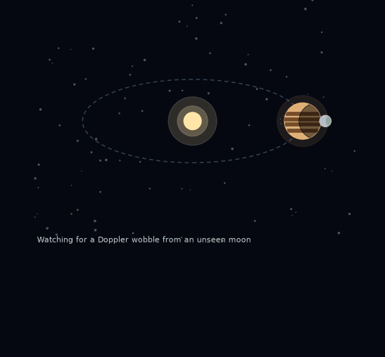
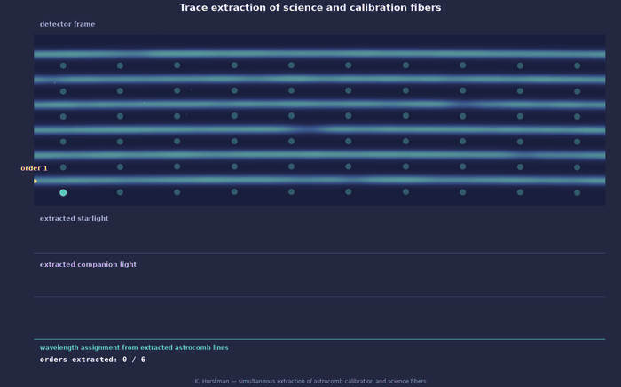
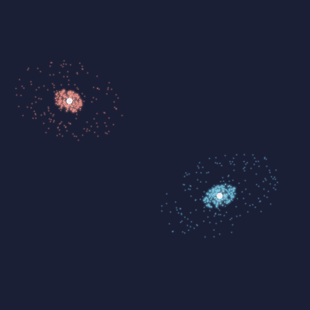

My current research spans discovering unresolved hierarchical systems, including exo-satellites and binary brown dwarfs, exoplanet detection and characterization, and near-infrared instrumentation.
Science
One of the three major scientific drivers of the 2020 Decadal Survey on Astronomy and Astrophysics is to identify and characterize Earth-like planets around other stars, with the long-term goal of directly imaging potentially habitable worlds to search for biosignatures. To date, astronomers have discovered over 6,000 exoplanets using a diverse array of observational methods and purpose-built instrumentation, developed largely in pursuit of detecting smaller, less-massive planets that resemble Earth. Along the way, these efforts have revealed exciting and unexpected diversity in planets and system architectures, such as Jupiter-mass planets orbiting closer to their star than Mercury or water worlds where the entire planet is potentially covered by oceans, that bear little resemblance to our own solar system.
Exosatellites and Binary Brown Dwarfs
Understanding the striking diversity of planetary systems requires an exploration of how they form and evolve, yet fundamental questions remain unanswered, such as how common our own solar system is within the broader population of planetary systems. Searching for hierarchical triple systems provide key insight into the multiplicity, formation, and evolution of diverse astrophysical systems. By studying hierarchical systems that span a range of mass ratios, from planetary satellites to stellar-mass companions, one can probe the unique physical processes that govern formation and dynamical evolution at each scale.
I have led several projects that combine high resolution spectroscopy with high contrast imaging to measure the radial velocities of substellar companions directly to search for exosatellites or binarity. Current instrumentation is sensitive to detecting satellites with ~1-3% the mass of its host planet and could probe gravitational instabilities as a way to create binary brown dwarfs. The next generation of high-resolution spectrographs may provide the precision necessary to perform searches for solar system-like exomoons around directly imaged planets (mass ratios of q ∼ 10-4).

Instrumentation
In order to identify and characterize Earth-like planets around other stars, technological development is imperative. Astronomical instrumentation takes measurements of observables, such as photons, and translates them into meaningful science.
Calibration Systems
Radial velocity (RV) measurements have been a foundational technique for detecting planets around other stars, beginning with the first discovery of a planet orbiting a Sun like star in 1995. To obtain precision radial velocities, spectrographs require robust calibration sources capable of producing precise wavelength solutions. Astrocombs are specialized optical frequency combs that serve as an accurate ruler for calibrating out thermomechanical drifts in astronomical spectrographs. They are designed to produce a broad, flat, uniform, resolvable spectrum of frequencies over the full bandwidth of interest.
I have worked on the integration of a custom-built, near-infrared astrocomb for a high resolution spectrograph in H-band (1.5-1.8 micron), quantifying the ability of the comb to correct thermomechanical drifts and deriving a wavelength solution using comb lines.

Data Reduction Pipelines (DRPs)
Data Reduction Pipelines (DRPs) are an integral part of instrumentation, processing raw data and turning it into useable data products. DRPs also can account for systematics in the data, leading a lower noise floor.
I have an active role in improving instrument sensitivity through contributing to DRPs. Fringing, oscillations in the measured spectrum as a function of wavelength, dominated residuals by up to 10% of the continuum in high signal-to-noise exposures, degrading wavelength calibration, atmospheric parameter retrieval, and companion detection sensitivity below a flux ratio of 1%. I identified three distinct physical sources of fringing within KPIC and developed a physically motivated model of the underlying Fabry-Perot cavities to correct for it in post-processed data.
As an undergraduate, I participated in the Caltech Summer Undergraduate Research Fellowship (SURF) program and worked with Professor Dimitri Mawet on the Palomar Radial Velocity Instrument (PARVI), a diffraction limited, fiber fed, high resolution spectrograph at the Palomar Observatory. To help PARVI achieve one of its main science goals, confirming the dynamical masses of candidate planets discovered by the NASA TESS mission, I worked on extracting radial velocities from by forward modeling one dimensional spectra.
Tangentially, I started work on another instrumentation project with at UCLA related to the DRP for OH Suppressing InfraRed Imaging Spectrograph (OSIRIS) at the W.M. Keck Observatory. The goal of the project was to explore the signal processing method, Non-negative Matrix Factorization (NMF), to separate blended spectra produced by an integral field spectrograph. Having well separated spectra is important so astronomical objects, such as exoplanets or stars in the galactic center, are characterized by the proper flux at each discrete wavelength. I found applying NMF to calibration scan data showed reduced crosstalk, or the physical manifestation of blended spectra on the detector, while not adversely impacting the signal-to-noise ratio.
Previous Projects
High Redshift Galaxy Mergers
Comparing local (z~0) and high redshift (z~2) galaxies allows us to explore our understanding of galaxy evolution and assembly. As an undergraduate, my project aimed to determine whether high redshift (z~2), merging galaxies are characterized by higher star formation rates and diluted metallicities compared to non-merging galaxies because in the local universe and in cosmological simulations of galaxy formation, merging galaxies experience nuclear gas flows that both fuel star formation and dilute metallicity. To investigate this, I used existing data collected from the MOSFIRE Deep Evolution Field (MOSDEF) survey to explore trends between stellar mass, metallicity, and star formation rate. I found my analysis indicated SFR enhancement and metallicity deficit for merging systems relative to non-merging systems for a fixed stellar mass at z ~ 2, though larger samples are required to establish these preliminary results with higher statistical significance.
